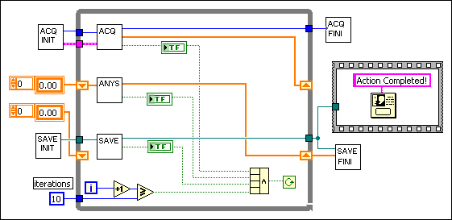

In Example 1, a data acquisition program in C creates and synchronizes the separate threads for acquiring, processing, and displaying the data by using events. Managing the threads and events comprises much of the main program. If the program needs additional threads, you must determine if they can be synchronized in the same way as the current simple program, if synchronization is even necessary, or if you must code another synchronization event structure to incorporate the additional tasks.
#include <windows.h>
#include <winbase.h>
#include <stdio.h>
#include "nidaq.h"����������������/* for NI-DAQ function prototypes */
#include "nidaqcns.h"�������������/* for NI-DAQ constants */
#include "nidaqerr.h"�������������/* for NI-DAQ error codes */
#include "dsp.h"������������������/* for Analysis prototype */
// Global buffers to transfer data between threads.
#define kNPts 1024
static i16 gAcquireOut[kNPts];����// acquire
static double gProcessArr[kNPts];�// process
static double gSaveArr[kNPts];����// save
// Acquire and Save helper functions.
int InitAcquire(void);
void FinishAcquire(void);
int InitSave(void);
void FinishSave(void);
// Structure passed to each thread.
typedef struct {
�������int kind;
�������HANDLE doneEvent;
�������HANDLE waitEvent;
} SyncRec;
// List of threads.
enum { kAcquireThread, kProcessThread, kDisplayThread, kChildren };
// Thread synchronization process and the actual work procedure.
DWORD WINAPI ThreadShell(LPVOID arg);
void DoAcquire(void);
void DoProcess(void);
void DoSave(void);
volatile BOOL gExitThreads = FALSE;
volatile int gAcqFailed = 0;������// set to TRUE if the acquisition failed
volatile int gProcessFailed = 0;��// set to TRUE if the process failed
volatile int gSaveFailed = 0;�����// set to TRUE if the save failed
main()
{
�������int i, j, k;
�������char buf[256];
�������DWORD id;
�������HANDLE shellH, evArr[kChildren];
�������SyncRec kidsEv[kChildren];
�������printf("Initializing acquire\n");
�������// Create synchronization events and threads.
�������for (i = 0; i < kChildren; i++) {
��������������// Set info for this thread.
��������������kidsEv[i].kind = i;
��������������evArr[i] = kidsEv[i].doneEvent = CreateEvent(NULL, FALSE, FALSE, NULL);
��������������kidsEv[i].waitEvent = CreateEvent(NULL, FALSE, FALSE, NULL);
��������������shellH = CreateThread(NULL, 0, ThreadShell, &kidsEv[i], 0, &id);
��������������if (! (kidsEv[i].doneEvent && kidsEv[i].waitEvent && shellH)) {
���������������������printf("Couldn't create events and threads\n");
���������������������ExitProcess(1);
��������������}
�������}
�������if (InitAcquire() && InitSave()) {
��������������printf("Starting acquire\n");
��������������for (j = 0; (j < 10) && !gAcqFailed && !gProcessFailed && !gSaveFailed;
�����������������j++) {
���������������������// Tell children to stop waiting.
���������������������for (i = 0; i < kChildren; i++)
����������������������������SetEvent(kidsEv[i].waitEvent);
���������������������// Wait until all children are done.
���������������������WaitForMultipleObjects(kChildren, evArr, TRUE, INFINITE);
���������������������// Main thread coordination goes here...
���������������������// Copy from process buffer to save buffer.
���������������������memcpy(gSaveArr, gProcessArr, sizeof(gSaveArr));
���������������������// Copy from acquire buffer to process buffer.
���������������������for (k = 0; k < kNPts; k++)
����������������������������gProcessArr[k] = (double) gAcquireOut[k];
��������������}
��������������printf("Acquire finished\n");
�������}
�������// Tell children to stop executing.
�������gExitThreads = TRUE;
�������// Release children from wait.
�������for (i = 0; i < kChildren; i++)
��������������SetEvent(kidsEv[i].waitEvent);
�������// Clean up.
�������FinishAcquire();
�������FinishSave();
�������// Do (minimal) error reporting.
�������if (gAcqFailed)
��������������printf("Acquire of data failed\n");
�������if (gProcessFailed)
��������������printf("Processing of data failed\n");
�������if (gSaveFailed)
��������������printf("Saving data failed\n");
�������// Acknowledge finish.
�������printf("Cleanup finished. Hit <ret> to end...\n");
�������gets(buf);
�������return 0;
}
/*
A shell for each thread to handle all the event
synchronization. Each thread knows what to do by
the kind field in SyncRec structure.
*/
DWORD WINAPI ThreadShell(LPVOID arg)
{
�������SyncRec *ev = (SyncRec *) arg;
�������DWORD res;
�������while (1) {
��������������// Wait for main thread to tell us to go.
��������������res = WaitForSingleObject(ev->waitEvent, INFINITE);
��������������if (gExitThreads) break;
��������������// Call work procedure.
��������������switch (ev->kind) {
���������������������case kAcquireThread: DoAcquire(); break;
���������������������case kProcessThread: DoProcess(); break;
���������������������case kDisplayThread: DoSave(); break;
���������������������default:
����������������������������printf("Unknown thread kind!\n");
����������������������������ExitProcess(2);
��������������}
��������������// Let main thread know we're done.
��������������SetEvent(ev->doneEvent);
�������}
�������return 0;
}
// DAQ Section ---------------------------------------------------
#define kBufferSize (2*kNPts)
static i16 gAcquireBuffer[kBufferSize] = {0};
static i16 gDevice = 1;
static i16 gChan = 1;
#define kDBModeON 1
#define kDBModeOFF 0
#define kPtsPerSecond 0
/*
Initialize the acquire. Return TRUE if we succeeded.
*/
int InitAcquire(void)
{
�������i16 iStatus = 0;
�������i16 iGain = 1;
�������f64 dSampRate = 1000.0;
�������i16 iSampTB = 0;
�������u16 uSampInt = 0;
�������i32 lTimeout = 180;
�������int result = 1;
�������/*
�������This sets a timeout limit (#Sec * 18ticks/Sec) so that if there
�������is something wrong, the program won't hang on the DAQ_DB_Transfer
�������call.
�������*/
�������iStatus = Timeout_Config(gDevice, lTimeout);
��������������result = result && (iStatus >= 0);
�������/*
�������Convert sample rate (S/sec) to appropriate timebase and sample
�������interval values.
�������*/
�������iStatus = DAQ_Rate(dSampRate, kPtsPerSecond, &iSampTB, &uSampInt);
��������������result = result && (iStatus >= 0);
�������/* Turn ON software double-buffered mode. */
�������iStatus = DAQ_DB_Config(gDevice, kDBModeON);
��������������result = result && (iStatus >= 0);
�������/*
�������Acquire data indefinitely into circular buffer from a single channel.
�������*/
�������iStatus = DAQ_Start(gDevice, gChan, iGain, gAcquireBuffer, kBufferSize, iSampTB, uSampInt);
��������������result = result && (iStatus >= 0);
��������������gAcqFailed = !result;
��������������return result;
}
void FinishAcquire(void)
{
�������/* CLEANUP - Don't check for errors on purpose. */
�������(void) DAQ_Clear(gDevice);
�������/* Set DB mode back to initial state. */
�������(void) DAQ_DB_Config(gDevice, kDBModeOFF);
�������/* Disable timeouts. */
�������(void) Timeout_Config(gDevice, -1);
}
void DoAcquire(void)
{
�������i16 iStatus = 0;
�������i16 hasStopped = 0;
�������u32 nPtsOut = 0;
�������iStatus = DAQ_DB_Transfer(gDevice, gAcquireOut, &nPtsOut, &hasStopped);
�������gAcqFailed = (iStatus < 0);
}
// Analysis Section ----------------------------------------------
void DoProcess(void)
{
�������int err;
�������/* Perform power spectrum on the data. */
�������err = Spectrum(gProcessArr, kNPts);
�������gProcessFailed = (err != 0);
}
// Save Section --------------------------------------------------
static HANDLE*gSaveFile;�������/* output file pointer */
/*
Initialize save information. Return TRUE if we succeed.
*/
int InitSave(void)
{
�������gSaveFile = CreateFile("data.out", GENERIC_WRITE, 0,
��������������NULL, CREATE_ALWAYS, FILE_ATTRIBUTE_NORMAL, NULL);
�������gSaveFailed = gSaveFile == INVALID_HANDLE_VALUE;
�������return !gSaveFailed;
}
void FinishSave(void)
{
�������CloseHandle(gSaveFile);
}
void DoSave(void)
{
�������DWORD nWritten;
�������BOOL succeeded;
�������succeeded = WriteFile(gSaveFile, gSaveArr, sizeof(gSaveArr), &nWritten, NULL);
�������if (!succeeded || nWritten != sizeof(gSaveArr))
�������gSaveFailed = 1;
}

The Parallel Process VI contains no additional code for threading because multithreading is built into LabVIEW. All the threads or tasks on the block diagram are synchronized each iteration of the loop. As you add functionality to the LabVIEW VI, LabVIEW handles the thread management automatically.
LabVIEW resolves most of the thread management difficulties. You do not have to create and control threads, because LabVIEW can recognize opportunities for multithreading in VIs, and the execution system handles multithreading communications for you. LabVIEW chooses a multithreaded configuration for the application, or you can customize configurations and priorities by selecting File�VI Properties and selecting Execution in the VI Properties dialog box. Priority settings automatically translate to set operating system priorities for the multiple threads. You can choose different thread configurations to optimize for data acquisition, instrument control, or other custom configurations. Experimentation in creating multithreading VIs in LabVIEW sometimes yields the best solution. However, if you use C or other text-based languages, rewriting the application to experiment with different configurations can take too much time and effort for the possible rewards.
LabVIEW set in multithreaded execution mode manages threads automatically. With LabVIEW, you do not have to be an expert to write multithreaded applications. However, you can still choose custom priorities and configurations if you need more control. Although C users have more low-level direct control of individual threads, they face a more complex set of issues when creating multithreaded applications.